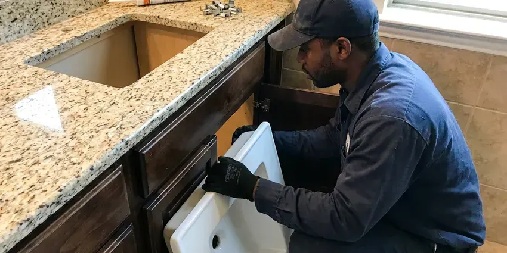

Sink Drain Replacement in Council Bluffs, IA
KFR Plumbing is your local expert for sink drain replacement in Council Bluffs, IA. We ensure your new drain system functions perfectly.
- Guaranteed Work
- Quick Local Service
- Licensed Iowa Plumbers
- Finish-Matched Drain Assemblies

Replace That Leaking, Corroded Sink Drain Today in Council Bluffs, IA.
We quote the full drain replacement upfront so there are no surprises later.
Leak-Free Sink Drain Replacement Service in Council Bluffs, IA
At KFR Plumbing, we understand the inconvenience of a failing sink drain. Our skilled plumbers perform precise sink drain replacement, addressing common issues like leaks, clogs, or foul odors with quality components and expert workmanship suited to the plumbing systems found in Council Bluffs homes.
Our expertise includes:
- Provide proper sealing and leak-free connections for new sink drains.
- Replace pop-up drain bodies, flanges and pivot rod assemblies
- Find and replace corroded or damaged drain components.

Additional Bathroom Plumbing Services in Council Bluffs, IA
From toilets to showers, our bathroom plumbing team in Council Bluffs, IA repairs, installs, and replaces every fixture with clean, code-compliant work.


Customers
Why Choose KFR Plumbing for Sink Drain Replacement in Council Bluffs, IA?
A failing drain leaks every time the sink is used, slowly ruining the vanity floor. Replacing the whole assembly at once stops the leak and prevents the next weak part from giving out.
- Transparent Pricing, We provide upfront, honest pricing for all sink drain replacement jobs, with no hidden fees.
- Quality Materials, We use only durable, corrosion-resistant drain components, including PVC, ABS, and brass, designed to stand up to years of daily use.
- Licensed Plumbers, All our technicians are fully licensed, insured, and very experienced in drain system work.
Citywide Coverage
From downtown Council Bluffs to the farthest suburbs, KFR Plumbing offers complete sink drain replacement services. We make sure all residents of Council Bluffs, IA have access to expert plumbing solutions.
Experienced Team
Each technician at KFR Plumbing is very skilled in diagnosing and repairing complex drain issues. We bring years of practical experience to every sink drain replacement job, delivering a professional and lasting solution.
Safety-First Approach
We install traps that hold a proper water seal and slope the trap arm correctly so sewer gas stays out of your home. All work follows Iowa plumbing code for fixture drains.
Trusted Certified Council Bluffs Plumbing Services Professionals
At KFR Plumbing, we take pride in providing licensed, certified plumbing services throughout Council Bluffs, IA. Backed by leading industry credentials, our experienced plumbers combine technical skill with genuine customer care. Whether it is repair, installation, or maintenance, we follow strict safety and quality standards to deliver lasting results you can trust.
Call Us Now PHCC Plumbing Contractor Recognition
PHCC Plumbing Contractor Recognition Better Business Bureau (BBB) Accreditation
Better Business Bureau (BBB) Accreditation Angi Certified Pro
Angi Certified Pro ISO 9001 Quality Management Certification
ISO 9001 Quality Management CertificationReliable Sink Drain Replacement Services in Council Bluffs, IA
Push-Button and Click-Clack Drain Installation in Council Bluffs, IA
Many homeowners switch to push-button drains to get rid of the lift rod entirely. These drains open and close with a press on the stopper. We confirm your sink has an overflow or choose a non-overflow version, then seal and test it. They are easy to clean and work well with newer faucets.

Pop-Up Drain Assembly Replacement in Council Bluffs, IA
A faulty pop-up drain assembly can prevent your bathroom sink from holding water or draining properly. Issues often arise from worn-out gaskets, broken lift rods, or corroded stoppers. KFR Plumbing provides expert replacement of entire pop-up drain assemblies, ensuring smooth operation and a watertight seal. We work with various brands and styles to match your existing fixtures, restoring full function to your bathroom sink in Council Bluffs.
Hard-Water Drain Damage Repair in Council Bluffs, IA
Water softeners are a common upgrade in Iowa homes, helping protect tank water heaters, faucets, and appliances from mineral damage. Hard water builds scale inside pop-up bodies and on stopper rods, and over time this freezes the mechanism or snaps the pivot rod. We remove scaled parts and install new drains with smoother materials that resist buildup. We can also suggest softening options to protect the new parts.
Emergency Sink Drain Services in Council Bluffs
A sudden, severe sink drain leak or complete blockage can be an emergency, causing water damage or rendering a sink unusable. KFR Plumbing offers emergency sink drain replacement and repair services to address critical issues promptly. Our team is equipped to respond quickly to your call in Council Bluffs, diagnosing the problem and performing necessary replacements to stop leaks or restore drainage, limiting disruption and potential damage to your home.
Leaking P-Trap Repair & Replacement in Council Bluffs
The P-trap is a key component of any sink drain, preventing sewer gases from entering your home and trapping debris. Leaks in the P-trap are common due to cracks, loose connections, or corrosion. KFR Plumbing offers precise P-trap repair or full replacement services, using high-quality PVC, ABS, or chrome-plated brass traps. We ensure proper sealing and alignment, eliminating leaks and maintaining the sanitary function of your sink drain system throughout Council Bluffs.
Utility Sink Drain Replacement in Council Bluffs
Utility sinks in laundry rooms or garages often handle harsh chemicals, dirt, and heavy debris, which can speed up drain wear and tear. KFR Plumbing provides robust utility sink drain replacement services, using industrial-grade components built to withstand tough conditions. We replace everything from the drain body to the P-trap and standpipe, ensuring efficient water removal and preventing back-ups. Our solutions are designed for durability and compliance with commercial-grade standards where applicable.
Code-Compliant Drain Upgrades in Council Bluffs
Older homes in Council Bluffs may have sink drain systems that no longer meet current plumbing codes or are simply outdated. When we replace your sink drain, we make sure that all new components, including the P-trap, tailpiece, and drain assembly, comply with the latest Iowa plumbing regulations. This not only prevents potential fines but also protects the safety and efficiency of your home's plumbing system, improving drainage and preventing gas leaks.

Pop-Up Drain Replacement in Council Bluffs
The lift-rod pop-up is the most common bathroom drain and the one that wears out most. We remove the old body, clean the flange seat, and install a new assembly with a fresh pivot ball and gasket. The lift rod is adjusted so the stopper seals and opens fully. This also fixes leaks from the pivot nut on the back of the drain.
Sink Drain Replacement Near Me in Council Bluffs, IA
When you search for 'sink drain replacement near me' in Council Bluffs, IA, KFR Plumbing is your trusted local choice. We are deeply familiar with the plumbing across the area, from older homes with unusual setups to modern constructions.
Our local presence means faster response times and a team that understands the local water conditions and common plumbing issues affecting Council Bluffs residents. You can count on us for efficient and expert service, right in your neighborhood, for all your sink drain repairs.
KFR Plumbing at a Glance
- Licensed and insured plumbers serving Council Bluffs, IA
- 24/7 emergency service with same-day scheduling
- Upfront, flat-rate pricing before work begins
- 4.8-star rated by 620+ Iowa customers
Council Bluffs Map
Council Bluffs Information
- Population
- 62,399
- Area codes
- 712/641/402
- Service area
- Council Bluffs and communities within 40 miles
- Nearby
- Sioux City, Waukee, West Des Moines, Urbandale
Water softeners are a common upgrade in Iowa homes, helping protect tank water heaters, faucets, and appliances from mineral damage. Mineral buildup and corrosion can lead to early drain failure, so timely sink drain replacement matters in Council Bluffs, IA homes.
Expert Services
Trust our professionals for reliable KFR Plumbing solutions in Council Bluffs, IA.
Our Specialized Plumbing Services in Council Bluffs, IA
At KFR Plumbing, we provide a complete range of plumbing services across Council Bluffs, IA. From leak detection to full system installations, our team ensures fast, precise, and affordable service for both residential and commercial properties. Explore our core services below:


How Our Sink Drain Replacement Process Works in Council Bluffs, IA
Our sink drain replacement process at KFR Plumbing is designed for efficiency and minimal disruption.
Request a Quote
Call (515) 308-3583 and tell us about the leak or drain issue. We set an appointment and give you a price range over the phone.
Remove Old Drain
We disconnect the trap, free the drain body and clean the basin opening. Any damaged wall stub is inspected and fixed if needed.
Install and Verify
We install the new drain, trap and arm, then fill and empty the sink several times. We confirm a tight seal and easy stopper action.
Frequently Asked Questions About Sink Drain Replacement in Council Bluffs
Replacing a bathroom pop-up drain and P-trap typically costs $150 to $350 including standard parts. Wall stub repairs or designer finish drains can bring it to $300 to $600.
Water softeners are a standard upgrade in Iowa homes, helping protect tank water heaters, faucets, and appliances from mineral damage. Yes, hard water can seriously impact sink drains, because the high mineral content leads to scale buildup inside pipes, restricting flow, encouraging clogs, and speeding up corrosion, especially in older metal drains. Regular maintenance or water treatment can reduce these effects.
No, a like-for-like drain replacement usually does not need a permit. Relocating drain lines in the wall may, depending on your local building department.
Yes, absolutely. If your old drain was corroded, partially collapsed, or constantly collecting debris due to rough interior surfaces, a new, smooth-walled drain will significantly improve drainage speed. It allows water and waste to flow freely, reducing the chance of future clogs and ensuring efficient waste removal.
Absolutely. KFR Plumbing provides complete sink drain replacement services for both kitchen and bathroom sinks, as well as utility sinks. Our skilled technicians are equipped to handle the drain configurations of all types of residential sinks in Council Bluffs.
For a simple like-for-like replacement of a P-trap or tailpiece, permits are typically not required in Council Bluffs. However, if the replacement involves significant alterations to the plumbing system, relocating a drain, or changing pipe sizes, a plumbing permit may be necessary to ensure compliance with local building codes. We will advise you if a permit is needed.
It does. Scale builds up on pop-up rods and seals, causing sticking and leaks. Regular cleaning and a water softener can lengthen the life of your drain.
A sewer odor typically means a dry or improperly installed trap, or a venting problem. We check the trap seal and vent when we replace any drain.
What People Are Saying About Our Plumbing Experts?

Emily R.
I called KFR Plumbing for plumbing repair, and the technician was fast, polite, and thorough. They explained the problem clearly and fixed it the same day. I will definitely hire them again. Highly recommended!
Plumbing Repair · Ankeny, IA
Laura S.
I scheduled a water heater replacement, and the team made the process smooth and affordable. The new unit works perfectly, and they cleaned up after completing the job.
Water Heater Replacement · Urbandale, IA
Daniel K.
A pipe burst at 11 pm and they actually answered. The plumber showed up within the hour, shut everything down, and had us back to normal the next morning. Could not ask for more.
Emergency Plumbing · Waukee, IA
Robert G.
The trenchless sewer replacement saved our front yard. They walked us through the camera inspection footage first so we knew exactly what we were paying for.
Sewer Line Replacement · West Des Moines, IASofia M.
Two new toilets installed in one visit, no mess left behind, and the tech even adjusted a faucet he noticed was dripping. Fair pricing and really friendly.
Toilet Installation · Council Bluffs, IAJames P.
Our commercial plumbing system had a leak under the sink, and KFR Plumbing handled it professionally. The plumbers arrived quickly and restored everything without disruption to our customers.
Commercial Plumbing · Ankeny, IA